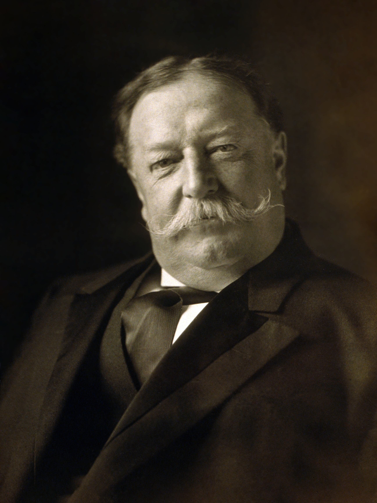
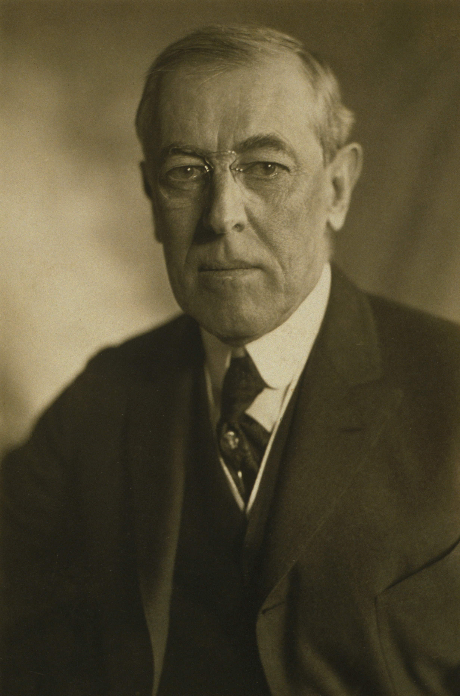
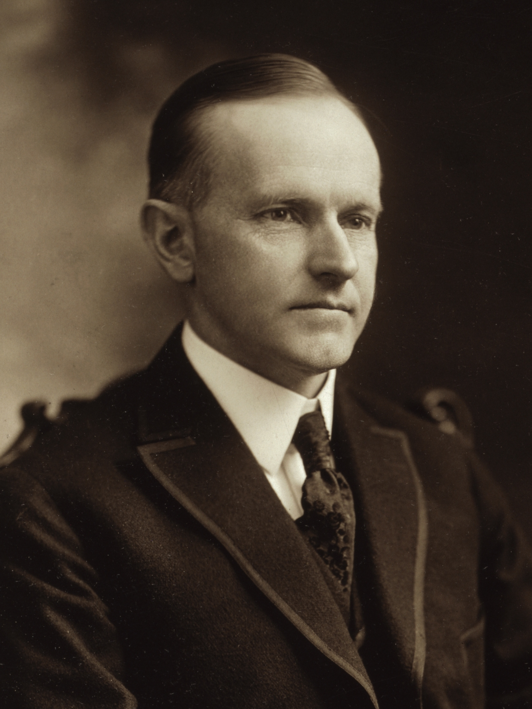
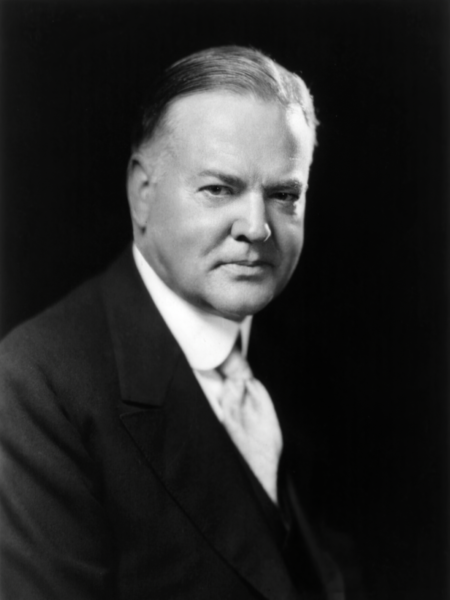
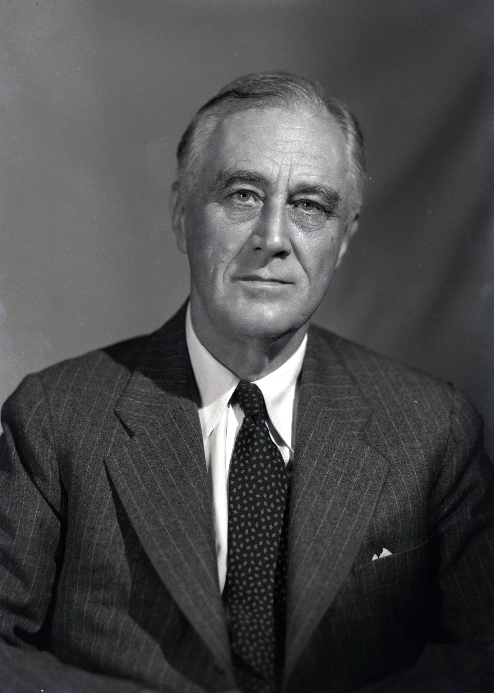

Home
News
The 1900s to the 1950s
Theodore Roosevelt
- Roosevelt drank the most coffee out of any other president
- First president to have left the country while in office this was to Panama
- Won a Nobel Peace Prize being the first president to do so

William H. Taft
- Although Taft is often thought of as a overwight president this is rather misleading especially since he lost a lot of weight after he left the office and died rather healthy
- First president to own a car
- Served in the Supreme Court being the only president to do so

Woodrow Wilson
- First president to hold a press conference
- First democrat elected since Cleveland
- Was the president of Princeton

Warren G. Harding
- Has the largest size shoes of any president
- Was the first president to talk on the radio
- Officially ended World War One

Calvin Coolidge
- Is known for not being very talkative
- His last will and testament was only 23 words long
- His father was the one who administered his oath of office at their family home since Harding died

Herbert Hoover
- He was nominated for the Nobel Peace Prize five times due to his humanitarian efforts during both world wars
- Helped pass the Marshall Plan though Congress
- He became popular due to the fact he led the American Relief Administration in order to feed the people of Europe after World War One

Franklin D. Roosevelt
- FDR is the only president to serve four terms
- Related to almost 38% of all other presidents
- He is more closly related to Martin Van Buren then Theodore Roosevelt

Harry S. Truman
- Another president whose's S in their name means nothing
- He is the only president in the 1900s who did not go to college
- Many didn't think that he would win a second term for president